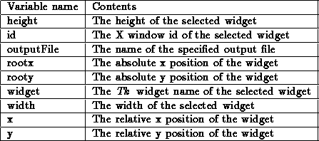

To modify the currently selected hardcopy command the menu item (File | Modify hardcopy command) is activated. The following parameters can occur in the hardcopy commands and are substituted when the hardcopy command is activated:
